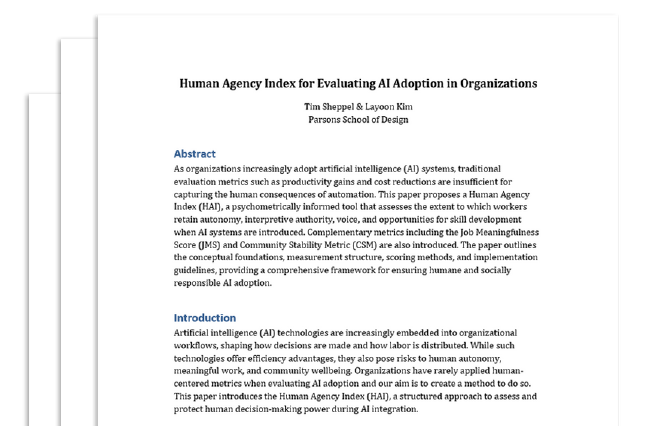
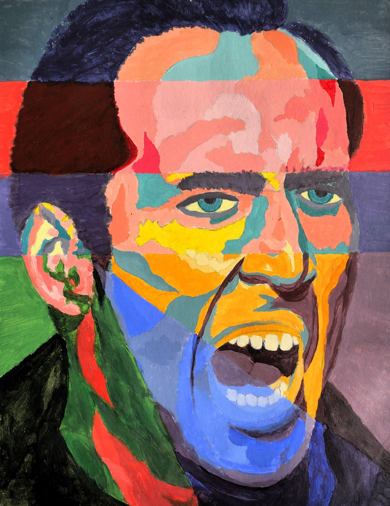

Habit Tracking App
Vibe Coding Project
(January 2026 - Present)
Prototyped a proof of concept gamified habit tracking app on excel before using Gemini and Cursor to build it into a web app using HTML, CSS, JavaScript, React, and Electron.
Vibe Coding Project
(January 2026 - Present)
Prototyped a proof of concept gamified habit tracking app on excel before using Gemini and Cursor to build it into a web app using HTML, CSS, JavaScript, React, and Electron.
Design Sprint
(January 2026 - Present)

Working with the NASA International Space Station (ISS) team to design a new partnership model for low earth orbit (LEO).
Disclaimer: This project is not paid and is primarily for educational purposes and collaboration with the NASA ISS team.Good Interventions '26 Design Competition
Exhibition Link(October 2025 - Present)

Working with a teammate, Layoon Kim, to design a new index for companies and organizations to measure and improve human agency in the integration of AI tools.
Presentation & research paper
Expand for slide deck and research paper previews. PDFs load locally; Office embeds work best on deployed HTTPS.
Python notebooks and R analysis with full-width previews.
Linear regression report
Knitted HTML report and PDF from an R / R Markdown workflow.
Jupyter notebook figures
Four notebook-based analyses with interactive figure carousels.
Selected builds and experiments beyond day-to-day analytics.
Physical / digital build
Interactive table concept — expand for details.
Painting & fabrication
Painted and 3D printed miniatures at 25mm scale — expand for details.
Visual work
Sketches and illustrations — expand for details.
JPGs in assets/images/personal-projects/illustration/ as
01.JPG–17.JPG (case must match on the web host).




Tip: focus this carousel and use ← → for images; zoom and pan use the controls above.